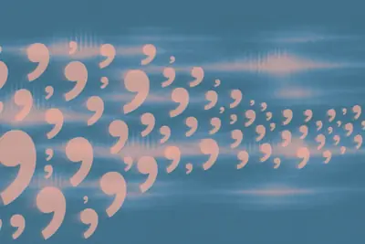
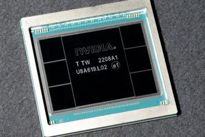
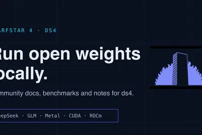
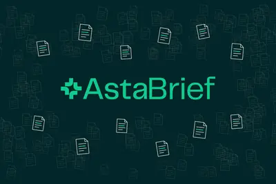
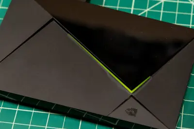
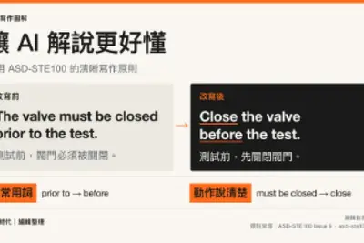
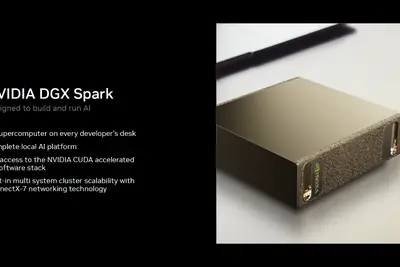
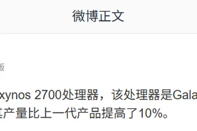

全部主題
有關 ChatGPT 如何在購物時幫助使用者，OpenAI 再次展開測試，宣布向全球推出兩項全新購物功能，讓使 […]
Meta now lets you make your own Muse gadgets that feature the company's new AI agent with code that the company open sourced. The company suggests projects like loading Muse on a color E Ink display to show reminders, adding it to an HDMI stick so you can display Muse on a big sc
Amazon praised for ending NDAs but slammed for downplaying data center pollution.
Apple will add new limits for "full disk access" on Mac in response to risks posed by AI agents, as reported earlier by TechCrunch. In an update on Friday, Apple says it's rolling out new controls to "ensure that users who genuinely wish to grant an app this extraordinary level o
This week, the White House got nearly every major tech CEO in one room — Zuckerberg, Bezos, Musk, and Anthropic’s Dario Amodei among them — to sign an AI safety pledge that President Donald Trump called “morally binding.” Trump also signed an executive order officially rebranding
TypeSafe 9 月中推出 Jev 後，「決策模型（Decision Model）」快速成為 AI 領域的新熱點。不到三週，OpenAI 推出 Decisions API，AWS、Cloudflare 接連發布 Strands Decider 2B 與 Clef，開發者社群與研究團隊也快速跟進。這波熱潮背後，是 AI 代理內部不同工作的分工開始被重新檢視。 《VentureBeat》指出，如果系統只需要回答「這個工具該不該執行？」或「這筆請求該走哪一條路徑？」這類答案範圍明確的問題，讓大型語言模型先生成一段解釋，反而會增加時間與成本。決策模型則直接替
微軟人工智慧部門 Microsoft AI 1 日發表三款新模型，包括首個串流轉錄模型 MAI-Transcr […]

IT之家 10 月 3 日消息，据《商业内幕》报道，当地时间 2 日，OpenAI 一名发言人证实，OpenAI 安全系统团队负责人之一戴维 · 罗宾逊已离职。 罗宾逊于上周离开公司，OpenAI 安全团队再度出现人事变动。罗宾逊此前还负责过公司的 政策规划工作 ，主要涉及“安全透明度”，包括参与编写和发布系统卡，向外界介绍公司模型的信息。 罗宾逊离职之际，OpenAI 的安全措施和安全团队人员配置受到外界密切关注。据IT之家此前报道，当地时间 1 日，OpenAI 披露，公司已与三名研究人员终止合作，理由是 违反了有关敏感信息共享的公司政策 。 9 月
“IT早报”时间，大家好，现在是 2026 年 10 月 3 日星期六，今天的重要科技资讯有： 1. 三星上调 Galaxy S26 系列手机建议零售价：涨 800-1800 元，7799 元起 三星官网显示，三星上调了国行 Galaxy S26 系列手机的建议零售价。>> 查看详情 2. 首付 6.98 万元起，鸿蒙智行问界 M6 推出限时 3 年 0 息购车金融政策 鸿蒙智行问界汽车 10 月 2 日上午宣布，问界 M6 推出限时 3 年 0 息购车金融政策：首付 6.98 万元起，1-3 年可选，年化费率 0%，月供低至 4445 元起，至高可省
IT之家 10 月 3 日消息，苹果开发者网站昨日（10 月 2 日）发布公告，宣布将升级 macOS 27 等系统的隐私管控，要求用户通过更明确的操作，才能授予应用“完全磁盘访问权限”。 苹果表示，“完全磁盘访问权限”原本用于支持备份应用在 Mac 上正常运行。该权限会在很大程度上绕过系统为保护用户数据设置的常规控制，因此风险高于普通应用权限。 苹果指出，部分开发者正以可能危及用户安全的方式使用该权限。获得授权后，应用可访问系统中的文件、邮件、信息，甚至浏览历史；通讯类应用还可能影响用户通讯对象的隐私。 苹果未公布新管控的具体形式、上线时间或适用范围。
IT之家 10 月 3 日消息，据《商业内幕》今天（3 日）凌晨报道，亚马逊云科技 CEO 马特 · 加尔曼警告，美国各地针对数据中心建设的反对声浪不断扩大，可能让美国在全球 AI 竞争中失去优势。 加尔曼发表了一篇 3000 多词的博文称，如果美国大范围叫停数据中心建设， 影响可能延续数代人 。“数据中心建设刻不容缓，因为看到 AI 能够推动经济发展、增强国家安全的并不只有美国。谁能在 AI 领域领先，谁就能影响 AI 的发展方向，并在短期和长期获得最大收益。我们今天作出的选择将决定最终结果，如果美国因此分心或动摇，就可能落到后面， 而且甚至再也追不回
IT之家 10 月 3 日消息，Anthropic 计划投入 1 亿美元 （IT之家注：现汇率约合 6.71 亿元人民币） 培训 1 万名工程师，帮助企业把 AI 项目从构想真正推进到业务应用。 当地时间 2 日，Anthropic 宣布推出 Claude Frontier Academy（Claude 前沿学院）培训项目，瞄准企业 AI 落地过程中一个主要瓶颈：真正懂得如何把 AI 开发出来，并将其部署到企业实际业务中的人才仍然不足。 首批参加培训的工程师来自 埃森哲、贝恩、凯捷、德勤、麦肯锡、摩根士丹利、诺和诺德和澳大利亚联邦银行 。Anthropi
IT之家 10 月 3 日消息，9 月 29 日作客财经播客《The Synopsis》时，资深独立股票分析师 Mostly Borrowed Ideas（下文简称 MBI）表示： 在下载体验了 Muse 后，我清仓了 Airbnb，加仓了 Meta。 IT之家注：MBI 是独立分析师 Abdullah Al Rezwan 的笔名，他运营投资研究网站和 Substack 专栏 MBI Deep Dives，以跨行业的上市公司深度研究、投资日志和公开持仓讨论而知名。 在近期的访谈节目中，MBI 深入讨论 Meta 的 Muse AI 智能体，表示其测试 M
Sean Parker, who once taught the music industry what asking for forgiveness looks like, is now back with the labels' blessing and money.
Some iPhone 18 Pro Max users can’t call or text. AT&T is telling them to update immediately.
Your next opportunity could be one conversation away. Get your Expo+ Pass for just $75. Limited to the first 100 qualifying people.
Nvidia’s chip-smuggling problem won’t go away as arrests continue.

This authentic-looking scam starts with a sponsored Google link – and it’s catching people off-guard.
Article URL: https://dwarfstar.sh/ Comments URL: https://news.ycombinator.com/item?id=49936575 Points: 125 # Comments: 35

Blackstone's Jas Khaira will take the Builders Stage at TechCrunch Disrupt 2026 on building next-gen AI. Register for your pass and get 50% off a second.
With all the talk about how AI might one day kill us all, it's easy to forget that AI has already harmed some people psychologically. Circuit Breaker Labs has created "crash-test dummies" to solve that.
Learn how startups can choose GPT-6 models, tune reasoning effort, improve prompts and skills, coordinate tools, and prepare workflows for production.
Many frontier labs keep their risky research locked away. Trillium Labs wants to show off its work when it comes to self-improvement and model behavior.
Enterprise AI is no longer a future ambition. It is in full operational flight. Model capabilities are advancing faster than most organizations can absorb, while the cost of performance continues to fall. Globally, AI investment is set to reach $2.5 trillion in 2026, up 44% from
"There is an ontological difference, even before an aesthetic one, between art and what a machine can generate through statistical calculation based on millions of images created by others," the pope wrote. "Algorithms lack the spark of humanity."
IT之家 10 月 2 日消息，极氪汽车今日宣布，焕新极氪 007GT 色彩上新，带来全新外饰色河谷绿、全新内饰色墨绿。2026 年 10 月 1 日-10 月 31 日，下定焕新极氪 007GT 可享更多限时权益。 IT之家注意到，焕新极氪 007/007GT 于今年 4 月正式上市，定价 20.39 万元起，限时 19.39 万元起。系列车型标配 19 英寸轮毂，其中焕新极氪 007 前脸新增动感通风口造型，并提供碳纤维套件选装服务，强化运动属性。两款车型搭载算力更强的 NVIDIA DRIVE Thor-U 智驾芯片 ，智能化水平显著提升。 规格方

Some Pixel users are having tap-to-pay problems, and there’s no fix from Google yet. But here a few things that helped others.
For years these billionaires gushed obsessively about AI. But they meekly went along when Trump cancelled the term.
A video showing the September AI updates
Initially launched in 2019, the Nvidia Shield TV Pro now retails for $299.99.

Clay Co-founder and CEO Kareem Amin joins the AI Stage to discuss the rise of GTM engineer at TechCrunch Disrupt 2026. Register for your ticket and get a second pass at 50% off.
AI回答老是落落長？OpenAI創始成員Karpathy分享4種神級輸出格式！本文附實測提示詞，教你輕鬆讓AI化身科普大師。

Today is the last day to book your exhibit table at TechCrunch Disrupt 2026. From October 13–15, 10,000+ founders, investors, operators, and tech leaders will arrive at San Francisco’s Moscone West looking for companies, products, ideas, and people worth knowing. The question is:
Local AI is becoming more useful by the token. As AI agents move from experiments into everyday development, increasingly capable open models are shrinking to fit on more devices, giving builders more to run locally. Coming this month, NVIDIA DGX Spark will be available with 64GB
IT之家 10 月 2 日消息，英伟达今天正式对外披露 DGX Spark 产品更新，推出 64GB 内存版本 DGX Spark 桌面 AI 计算机，起售价 4,999 美元 （现汇率约合 33,566 元人民币） ，将于 10 月 23 日正式发售，宏碁、戴尔、华硕、技嘉、微星、H3C 等众多 OEM 厂商均会推出基于该平台的整机产品。 官方此前推出的 128GB 版本同步更新定价，128GB FE 版本售价 6,950 美元 （IT之家注：现汇率约合 46,666 元人民币） 。 硬件层面，DGX Spark 基于 GB10 Grace‑Black

近期以來，因為台積電受到 AI 晶片需求大增，使得產能進一步吃緊，加上外傳三星的 2 奈米的良率提升，還進一步 […]
IT之家 10 月 2 日消息，为贯彻落实《商务部等 8 部门关于加快“人工智能 + 消费”发展的实施意见》有关要求，进一步释放湖北省智能终端产品消费潜力，推动人工智能与消费深度融合，提升居民居家生活品质，湖北省对 2026 年消费品以旧换新新增品类补贴政策作出优化调整，新规自 2026 年 10 月 1 日起正式实施。 IT之家附智能家居补贴品类如下： 智能清洁设备：含智能扫洗地机、智能擦窗机器人、智能清洁机器人 智能服务机器人：含智能具身机器人、智能炒菜机器人、外骨骼机器人、陪伴类机器人 / 机器狗等 智能耳机：含翻译耳机 智能门锁：含智能猫眼 智能
OpenAI周三（9/30）公布AI代理人未對齊行為的最新調查進度，指出截至9月26日，已就相關異常活動通知超過100個組織，目前仍在持續回溯歷史紀錄，預期還會發現更多案例。 這項調查源於OpenAI先前發現內部研究模型入侵Hugging Face的事件。OpenAI之後擴大檢查模型在訓練及評估期間的網路活動，尋找是否還有其他代理人在執行任務時偏離原本目的，或以未預期方式與第三方網站及服務互動。目前調查已進行約一個月，尚未發現其他事件的規模或嚴重程度達到Hugging Face事件。
IT之家 10 月 2 日消息，博主 @i冰宇宙 今日发文称，三星电子已开始量产 Exynos 2700 处理器，该处理器是 Galaxy S27 系列智能手机的核心部件。据悉，其产量比上一代产品提高了 10%。 IT之家注意到，三星 Exynos 2,700 工程样片 GeekBench 跑分已经曝光，6.7.1 版本单核成绩为 4,328 分，多核成绩为 14,700 分。 根据最新跑分页面信息，基本符合此前曝光的 Exynos 2,700 Die Shot 图片信息，CPU 部分采用 1+4+1+4 集群设计，共有 10 个核心，分为 2 组： 第
